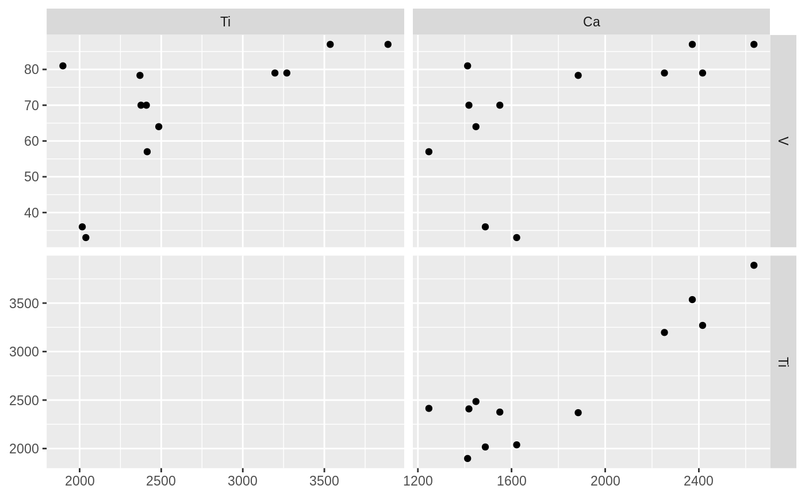

Use either the ggplot framework (autobiplot) or base plotting to biplot a parameter-long data frame, like that of the data table in a mudata object.
long_pairs(x, id_vars, name_var, names_x = NULL, names_y = NULL, validate = TRUE, max_names = 5) long_biplot(x, id_vars, name_var, measure_var = "value", names_x = NULL, na.rm = FALSE, max_names = 5, ...) autobiplot(x, ...) # S3 method for data.frame autobiplot(x, id_vars, name_var, measure_var = "value", names_x = NULL, names_y = NULL, error_var = NULL, na.rm = TRUE, validate = TRUE, max_names = 5, labeller = ggplot2::label_value, ...)
Arguments
| x | the object to biplot |
|---|---|
| id_vars | the columns that identify a single row in x |
| name_var | The column where names_x and names_y are to be found |
| names_x | The names to be included in the x axes, or all the names to be included |
| names_y | The names to be included on the y axes, or NULL for all possible combinations
of |
| validate | Ensure id_vars identify unique rows |
| max_names | When guessing which parameters to biplot/pair, use only the first max_names (or FALSE to use all names) |
| measure_var | The column containing the values to plot |
| na.rm | Should NA values in measure_var be removed? |
| ... | passed to |
| error_var | The column containing values for error bars (plus or minus error_var). |
| labeller | The labeller to use to label facets (may want to use |
Examples
library(tidyr) library(dplyr) # create a long, summarised representation of pocmaj data pocmaj_long <- pocmajsum %>% select(core, depth, Ca, Ti, V) %>% gather(Ca, Ti, V, key = "param", value = "value") # biplot using base plotting long_biplot(pocmaj_long, id_vars = c("core", "depth"), name_var = "param")#>#>#> # A tibble: 36 x 6 #> core depth .name_x value_x .name_y value_y #> <chr> <int> <fct> <dbl> <fct> <dbl> #> 1 MAJ-1 0 Ca 1885. Ti 2370. #> 2 MAJ-1 1 Ca 1418 Ti 2409 #> 3 MAJ-1 2 Ca 1550 Ti 2376 #> 4 MAJ-1 3 Ca 1448 Ti 2485 #> 5 MAJ-1 4 Ca 1247 Ti 2414 #> 6 MAJ-1 5 Ca 1412. Ti 1897. #> 7 POC-2 0 Ca 1622 Ti 2038 #> 8 POC-2 1 Ca 1488 Ti 2016 #> 9 POC-2 2 Ca 2416 Ti 3270 #> 10 POC-2 3 Ca 2253 Ti 3197 #> # … with 26 more rows